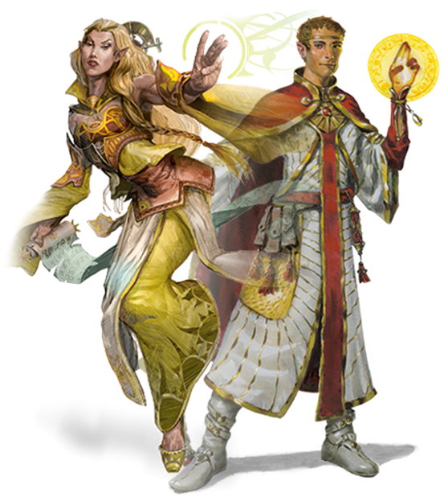
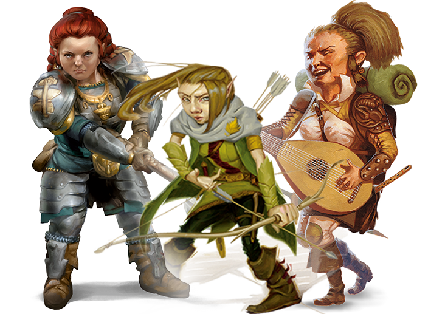
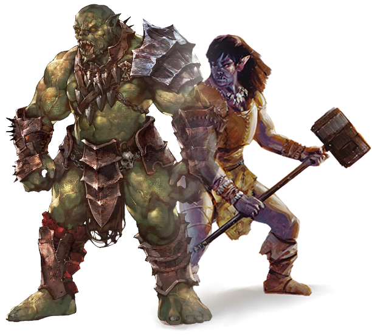
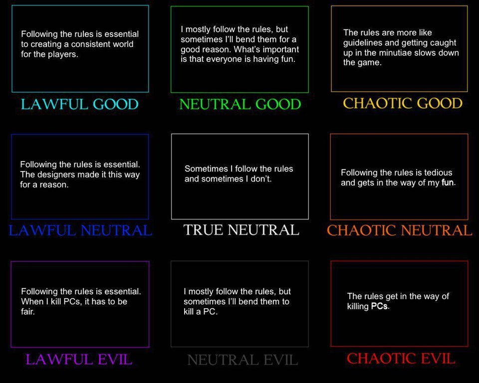
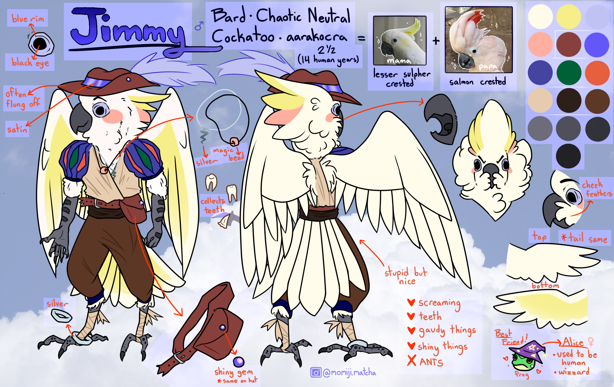

How Do I Create A Character?
So, you've decided that you want to take part in your very own campain! Before you begin playing, you're going to need your very own character that you can play as. The task may seem a bit overwhelming, but it can be broken up into 3 steps. Keep reading to begin creating your very own adventurer!
Races
There's an abundance of species in DND. From humanoids to monster, there's a vast array of creatures to choose from. Throughout the years, many new races have been added to the game, but these are these are the core 6 types:
Humans

In the realm of DND, humans are seen as ambitious, adventurous innovators, conquering lands and foreging connections with other races. To make up for their lack of high fantacy traits, Humans get a +1 to every ability score and a proficiency in an extra language.
Elves / Half-Elves
Elves are peaceful beings of serene beauty that are passionate about the arts, music, and nature. Half-elves are half human and half elf, combining the best traits of both races but belonging nowhere.
Dwarves/Gnomes/Halflings
Though they all look similar, these races each come with their own unique perks and abilities:
Dwarves harken from the depths of the mountains, a strong, stocky race with a talent for mining, fighting, and smithing.
Gnomes are a very lively, fast speaking people harkening from the woodlands, drawing enjoyment from every fascet of life from inventing to tinkering to cracking jokes.
Halflings are a kind people who tend to redisde away from the hustle and bustle of large communities, prefering a good home, a fine drink, and a hearty meal to the spoils of war.
Orcs/Half-Orcs
Orcs are a huge, brutish warrior race hailing from the god Gruumsh, jutting aws and huge teeth making them an intimidating site.
Half-Orcs are the children of Humans and Orcs, often brought about from the union of 2 groups of people. Like Half-Elfs, their mixed blood
making them both outcasts from both races and giving them advantages over both.
Tieflings

Teiflings are humans burdoned by an ancient sin, making them devil like creatures with solid eyes, horns, and a thick, lashing tail. Because of their connection with hell, they are ourcasts in every commuity, often looked at with distain and distrust.
Dragonborn

Born from the eggs of a dragon, dragonborn are a powerful, respected, yet feared race. Most dragonborns live in clans, living and breeding
Classes
You've probably heard of the traditional wizzrd, but have you heard of sorcerers? Rougues? Barbarians? Here's an overview of the basic classes you have to choose from:
Basic Magic Users (Wizzards/Sorcers/Warlocks)


At first glance, these three classes seem almost identical, but they harken from very different backgrounds.
Wizards obtain their magic through countless hours of study, pulling from the intertwined magic of the universe.
Sorcerers draw inherant magic from their bloodline, having been granted.
Warlocks
Bard

Bards are traveling musicins who join groups of adventurers, granting inspiration to their fellow adventurers and weaving tales of their travels.
Druid

Druds draw their power from the dieties of the land, casting nature magic and adotping animal forms.
Cleric/Paladin

Both of the classes draw their magic from the gods, but in very different ways:
Clerics draw their devine power through high worship of the gods. They can use theri magic both to heal and to smite.
Paladins are holy warriros bound to an oath, sworn to a god to uphold truth and justice.
Rogue

Rogues are cunning scoundrals who have mastered the art of sealth and deception, traveling the land stealing and swindling.
Non-Magic Users (Barbarian/Fighter/Monk/Ranger)


Even though these classes are less magic focused, don't be devieved, they still have magical elements about them.
Barbaians are powerful, primative fighers capable of going into powerful rages. Though they may not be the brightest,
they are devinitly the strongest.
Fighters are masters of all combat styles, capable of taking on even the toughest of foes.
Monks are martial arts masters who channel the elemental magic of ki into their fighting style. Think Dragon Ball.
Rangers are deadly hungters that use their skills to hunt down frightening beasts, like poachers but cooler.
Allightment/Backstory
Now that you have your character's physicality and basic traits fleshed out, it's time to give them a personality! While develping their backstory is up to your preference, each character in DND has an allignment, or where they fall on the morale scale:
Think of it as a kind of good guy bad guy rating system but with some in betweens.
Good
You're a typical goodie two shoes. You follow all the rules and always want to do what's right. Peace and love and goodwill!
Neutral
You're indifferent. Things could work, or they couldn't. Was that bank just robbed? None of your buisness.
Evil
Dasterdly, devilish, decieving, all words that could be used to describe you. The law, you don't know her!
Lawful
The law's the law, it's there for a reason and you live by that montra. Everything in it's place, everything in order.
Chaotic
You do whatever you want, whatever you want, your way or the high way. What's goinna happen next? Who knows!
That's it! Now, with the knowledge of basic character under your belt, go forth and create your adventurer! Here's a completed example:
(Aarakokra is yet another playable race; the possibilities are endless!)